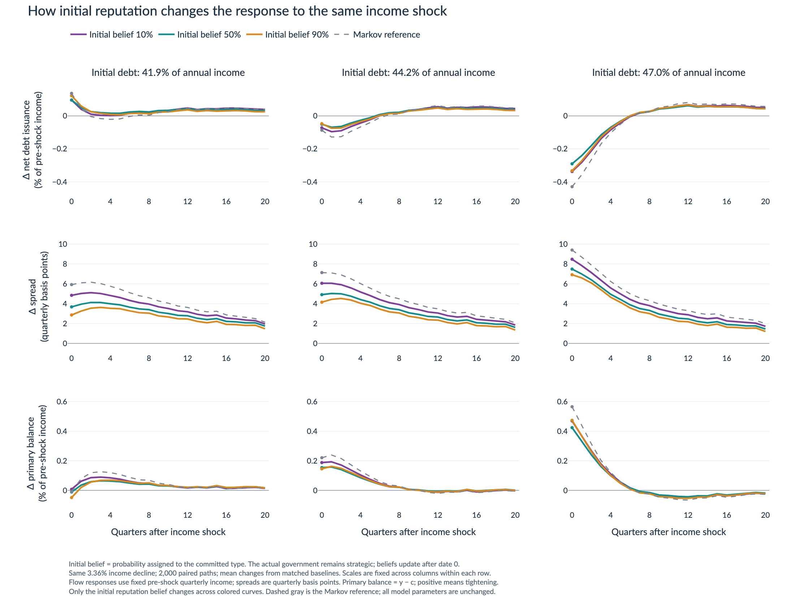
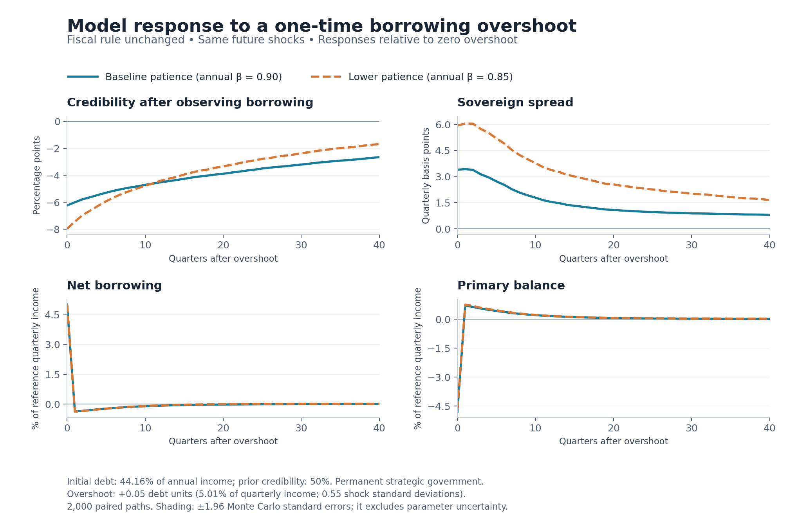
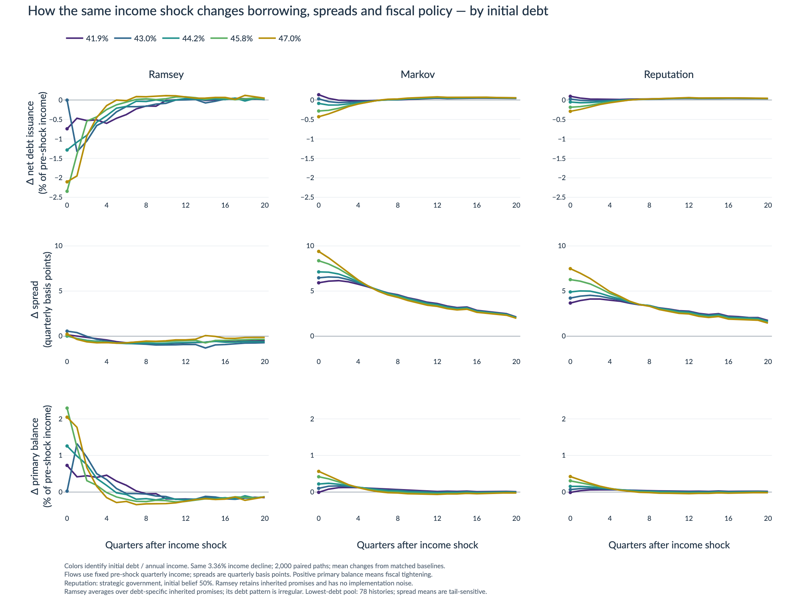
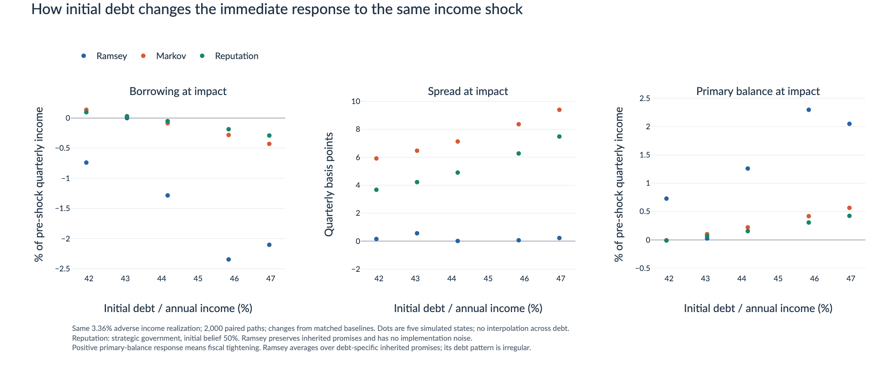
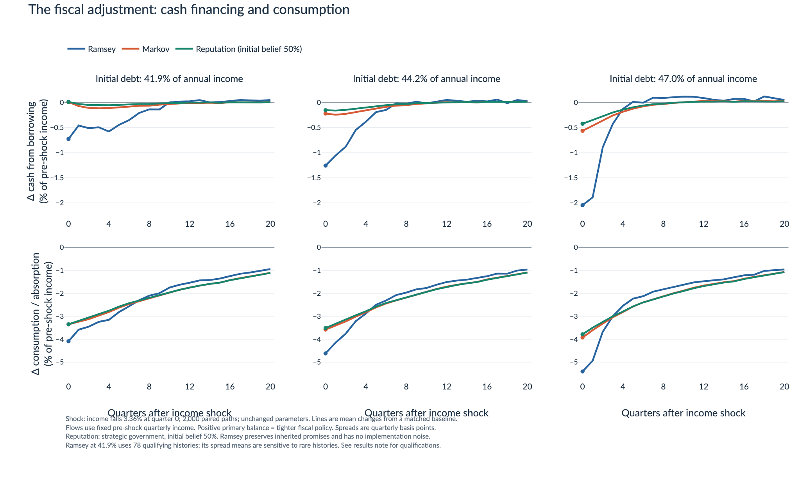
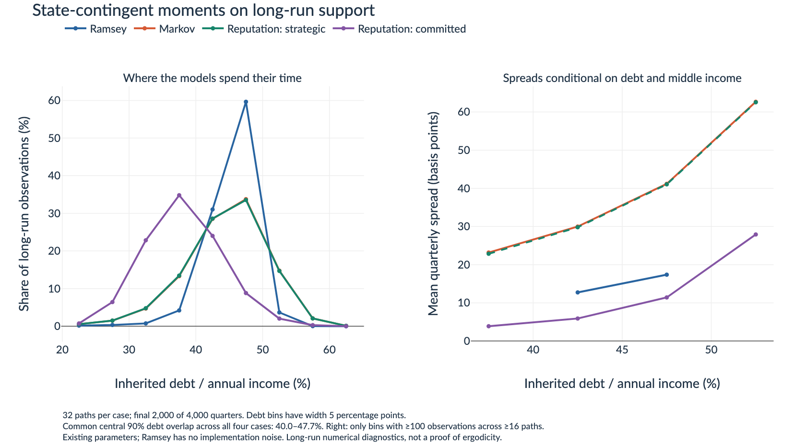
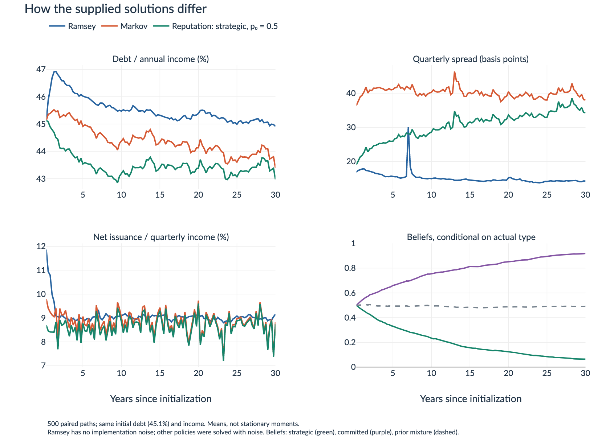
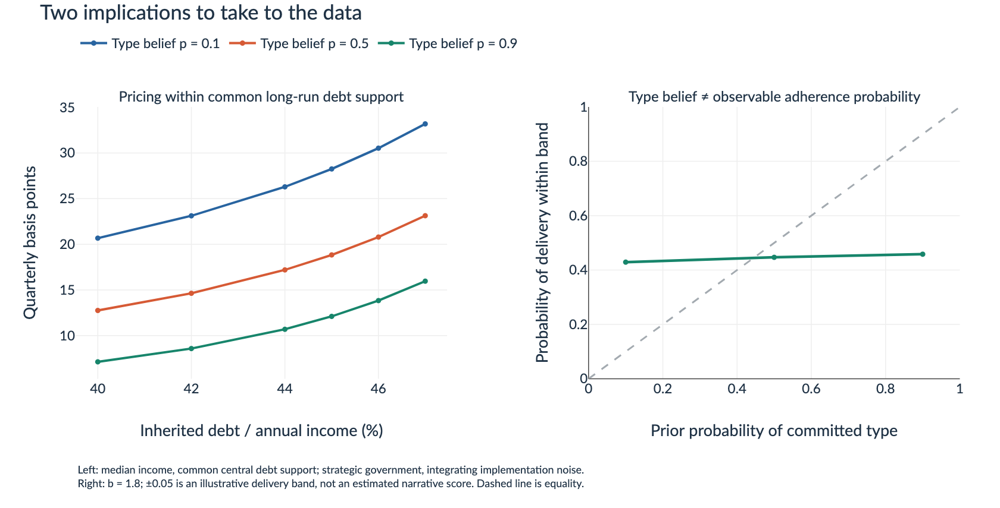

Borrowing response
Net debt issuance
RESEARCH NOTEBOOK
Commitment, discretion, and reputation — an experiment board.
Saved baseline and lower-patience solutions. These are preliminary model results, not empirical estimates.
01 · PAIRED RESPONSES
Select government patience, then compare the models or initial reputation at the same starting debt.
Net debt issuance
Quarterly basis points
Primary balance · positive means tightening
Loading saved responses…
Flow changes are percentages of fixed pre-shock quarterly income. Each outcome has its own scale. Fixed scales are consistent across debts, beliefs, and patience cases within the selected view; “Zoom” explicitly changes them.
Loading the selected patience case…
Loading the selected patience case…
Initial reputation is the perceived probability of the committed type. The simulated government stays strategic in the reputation model; beliefs update after quarter 0. Changing this belief does not change the government’s actual type.
Each case uses 2,000 paired paths and common future income draws. The baseline uses annual β = 0.90; the lower-patience case uses annual β = 0.85, with equilibrium policies and prices solved again. All other primitives and the committed rule stay fixed. Controls select saved simulations without interpolating between debts or beliefs. The primary resource balance is y − c; the model has no separate tax and government-spending instruments.
Ramsey preserves inherited commitments and has no implementation noise. Markov and reputation include implementation noise. Ramsey averages over debt-specific promise histories, so debt comparisons do not hold its entire state fixed. Its lowest-debt pool has 78 histories; spread means retain rare tails.

02 · LEARNING FROM IMPLEMENTATION
A one-time surprise in realized borrowing, with the fiscal rule unchanged. Compare the resulting belief revisions and policy responses across patience levels.
Posterior committed probability · percentage points
Quarterly basis points
Net debt issuance
Primary balance · positive means tightening
Loading saved responses…
Responses are differences from zero implementation noise at quarter 0. The actual government remains strategic in these paths. Credibility is measured after observing each quarter’s borrowing; flow responses use fixed reference quarterly income. Hover for paired Monte Carlo standard errors.
The implementation shock is independent over time. Persistence comes from the resulting debt, beliefs, and policy choices. Investors observe borrowing, not its decomposition into intended policy and noise.
Loading the selected experiment…
Change debt first at the zero-shock posterior, then change beliefs at the new debt. This is order-dependent accounting using the saved price function.
| Patience case | Credibility zero noise → selected shock | Debt component quarterly bp | Belief component quarterly bp | Total spread change quarterly bp |
|---|
PREDICTIVE COUNTERPART
Investors forecast both permanent government types, weighted by the posterior after observing borrowing. These forecasts include the change in inherited debt as well as learning about type.
Loading the predictive event definition…
| Patience case / window | After zero noise | After selected shock | Change percentage points | Monte Carlo SE of the change, pp |
|---|
These are posterior predictive probabilities. A rule exceedance is an illustrative measurement event; the model has no literal plan-abandonment decision. Quarter 0 is excluded. Predictive simulations use 2,000 paths per permanent type over the next four quarters.
The table gives a counterpart based on observed implementation. A downgrade before any fiscal deterioration would require an additional public information signal in the model.
The rule stays fixed, while observed borrowing changes debt and credibility together. The decomposition separates their accounting contributions; it is not an independently identified information shock.
The income-shock experiment compares the same adverse income shock across initial credibility levels while beliefs evolve.
Initial debt is 44.1634% of annual income, income is at node 11, and prior credibility is 50%. The strategic government chooses its intended borrowing before the quarter-0 implementation shock. Realized borrowing equals that target plus 0, +0.05, or −0.05. Zero noise can itself convey news, so its posterior need not equal the 50% prior.
The response paths use 2,000 matched draws over quarters 0–40, shared across arms and patience cases. The baseline annual discount factor is 0.90; lower patience is 0.85. These experiments evaluate previously solved policies and prices without solving a new equilibrium. Both use the same committed rule and other primitives.
Response paths clamp updated beliefs to the saved belief grid. Predictive forecasts carry raw Bayesian beliefs and clamp policy lookups; no boundary visits occur in their four-quarter window. No debt-grid excursions occur in either experiment. Native-simulator discrepancies are zero and maximum budget errors are below 10−15. The downloadable checks report belief-clamp counts. Monte Carlo errors exclude parameter and equilibrium-approximation uncertainty.

Download overview PDF · All response paths (CSV) · Predictive forecasts (CSV) · All data and checks
03 · STATE DEPENDENCE
Five shared starting debt levels: 41.9%, 43.0%, 44.2%, 45.8%, and 47.0% of annual income.
Loading the selected patience case…
Static figures are not included for this case. The Income shocks tab contains its response charts at all five debts.
At 50% initial reputation, higher debt brings a larger initial spread increase, less borrowing, and stronger fiscal tightening across the tested states.
At 43.0% debt, 97.9% of sampled histories have no immediate issuance change. At 45.8%, initial tightening exceeds that at 47.0%. The economic or numerical cause remains unresolved.



Debt changes also change the distribution of inherited Ramsey promises. Exact debt conditioning and the solution grid may matter; the figures do not establish a general monotonicity result.
04 · SUPPORT & CONVERGENCE
Baseline annual β = 0.90. Long-run diagnostics from different starting debts, incomes, and beliefs.
This is the overlap of the central 90% marginal debt ranges across Ramsey, Markov, and both permanent reputation types.
Selected reference starts; final 2,000 of 4,000 quarters across 32 paths.
| Model / permanent type | Mean debt % annual income | Mean spread quarterly bp | Central 90% debt range % annual income |
|---|

Under common draws, tested initial conditions numerically converge within each regime and permanent type. This is evidence of forgetting the tested starting conditions. It is not a proof of ergodicity, uniqueness, or common support of the full state vector.
The shock experiment’s 10%, 50%, and 90% initial reputation beliefs describe learning transitions. They are not the strategic government’s asymptotic posterior.

05 · TOWARD MEASUREMENT
Baseline annual β = 0.90. State-contingent pricing and an illustrative bridge between type beliefs and delivery.
At median income and roughly 45% debt, expected strategic-reputation spreads are 28.25, 18.84, and 12.10 quarterly basis points at beliefs of 10%, 50%, and 90%.
Observable adherence also depends on the policy rule, incentives, state, and implementation noise. No mapping to observed narrative categories has yet been estimated.

The result concerns confidence in the model’s particular committed rule. It is not a universal statement that credibility always lowers spreads. A reversal at 65% debt appears in the state exercise, but that debt level is a rare stress-state counterfactual outside the central range used here.
06 · REPRODUCIBILITY
Inspect the experiment definitions and download the outputs behind the board.
Income-shock, implementation-shock, and debt charts compare annual discount factors of 0.90 and 0.85. The lower-patience equilibria are solved again, with all other primitives and the committed rule fixed. Long-run, pricing, and slide results retain the baseline.
Paired accounting identities, equivalence with native simulation paths, Ramsey price promises, and independent reconstruction of impact statistics.
Numerical approximation, rare Ramsey tails, and history-pool sampling. Monte Carlo standard errors exclude parameter and empirical uncertainty.
Borrowing: net face issuance, b′ − (1 − δ)b. Cash financing: q[b′ − (1 − δ)b]. Primary resource balance: y − c. The latter is the fiscal adjustment measure; tax and spending instruments are not separate model choices.
Units: debt is scaled by annual income; response flows use fixed pre-shock quarterly income; diagnostic spreads use quarterly basis points. The original slide simulation series uses different spread units and should not be read as these diagnostic basis points.
Cross-model comparison: Ramsey has inherited commitment promises and no implementation noise. Markov and reputation include implementation noise. The experiment compares the supplied models rather than isolating commitment while holding every other model feature fixed.
Income shock: the middle income node is replaced at impact by the adjacent lower node, a 3.36056% decline (1.367 innovation standard deviations in logs). Future paths use the original discrete transition matrix and coupled draws.
The model period is a quarter. The table describes the baseline solution. Lower patience changes only β from 0.901/4 ≈ 0.974004 to 0.851/4 ≈ 0.960185. The lower-patience metadata download records the new solution and checks.
| Parameter | Value |
|---|
CSV for analysis, PDF/PNG for discussion, and notes for assumptions and checks. Download the data bundle (ZIP).
All nine figure PDFs and two table fragments were reproduced from the supplied baseline solution (annual β = 0.90). Original scatter sampling was unavailable, so the replacement is seeded. The original figures named zeta plot 1 − ζ while retaining the source label.